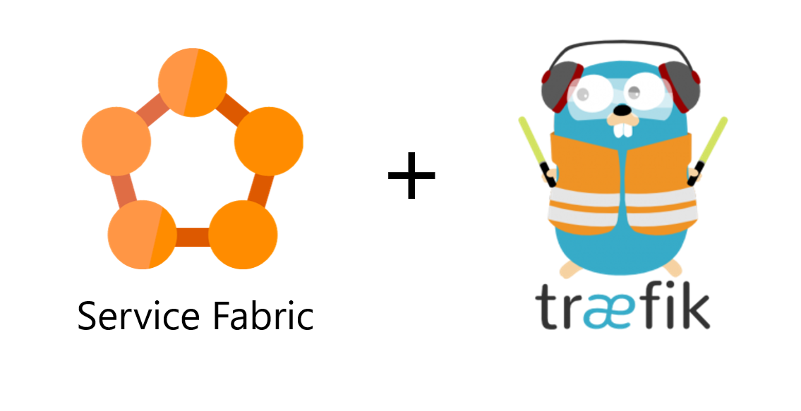

Traefik on Service Fabric
What is Traefik?
“Træfik (pronounced like traffic) is a modern HTTP reverse proxy and load balancer made to deploy microservices with ease”
Why use this over Service Fabric Gateway?
Enables more
Flexible Routing
Route on
- Urls(and rewrite those urls)
- Headers(and modify those headers)
- HTTP Method
- Query Params
- And more...
Enables more
deployment techniques
- Canary releases
- Arbitrary percentages
- Headers
- Blue green deployments
It's more...
Robust
-
Actively developed
- Bugs fixed
- Features added
- Circuit Breakers, Retry built in
- Health checks
- Widely used
- Commercial support
How does it work?

The frontend and backend rules are defined in the application's ServiceManifest.xml files
<ServiceTypes>
<StatelessServiceType ServiceTypeName="ExampleAppType">
<Extensions>
<Extension Name="Traefik">
<Labels xmlns="http://schemas.microsoft.com/2015/03/fabact-no-schema">
<Label Key="traefik.frontend.rule.example">PathPrefixStrip: /exampleapp</Label>
<Label Key="traefik.expose">true</Label>
<Label Key="traefik.frontend.passHostHeader">false</Label>
<Label Key="traefik.backend.group.name">Canary</Label>
<Label Key="traefik.backend.group.weight">100</Label>
</Labels>
</Extension>
</Extensions>
</StatelessServiceType>
</ServiceTypes>
Labels can be dynamically changed at runtime by using:
- Properties REST API
- Service Fabric Powershell commands
- sfctl - cross-platform cli
sfctl property put --name "ExampleApplication/WebService" --property-description "{\"PropertyName\":\"traefik.frontend.rule.default\",\"Value\":{\"Kind\":\"String\",\"Data\":\"PathPrefix: /a/path/"}}"
Each platform that supports Traefik must implement a
Provider
Providers query the orchestrator's current state and sends a configuration file to Traefik
Each provider generates the configuration file using its
Default Template File
Can be overridden to implement default rules and conventions